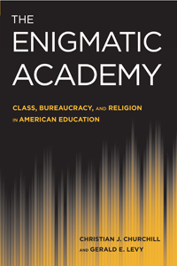

<body bgcolor="#FFFFFF" text="#000000" link="#0000FF" vlink="#CC0000" alink="#CC0000"><center><hr width="350" size="1" align="center" noshade>Challenging the common idea that education can save the individual and society from major problems of the modern world<hr width="350" size="1" align="center" noshade><p><a href="https://cdcshoppingcart.uchicago.edu/Cart/ChicagoBook.aspx?ISBN=9781439907832&&PRESS=temple" target="_top">Buy this book!</a> | <a href="https://cdcshoppingcart.uchicago.edu/Cart/Cart.aspx?PRESS=temple" target="_top">View Cart</a> | <a href="https://cdcshoppingcart.uchicago.edu/Cart/Cart.aspx?PRESS=temple" target="_top">Check Out</a></p><p></p></center><!--none//--><h1>The Enigmatic Academy</h1>
<H2>Class, Bureaucracy, and Religion in American Education</H2>
<h3>Christian J. Churchill and Gerald E. Levy</h3>
<P>cloth 1-4399-0783-8 $85.50, Jun 12, <FONT COLOR=#990033>Available</FONT>
<br>paper 1-4399-0784-6 $32.95, Jun 12, <FONT COLOR=#990033>Available</FONT>
<br>Electronic Book 1-4399-0785-4 $32.95 <FONT COLOR=#990033>Available</FONT>
<BR> 234 pp
6x9
</P><BLOCKQUOTE><I>"</i>The Enigmatic Academy<i> is a bold and eye-opening book that plumbs the depths of contemporary schooling in America in considerable detail and with sensitivity and intelligence. A landmark in theoretically sophisticated institutional and social-psychological analysis, this book critically examines the seemingly disparate worlds of a New England hippie/preppie, très expensive, bucolic liberal arts college; an elite, last-chance prep school for the deviant and often troubled youth of the powerful and well-to-do; and, with its pronounced tragedy and self-delusion, an educational center for the American underclass. What makes </i>The Enigmatic Academy<i> worthwhile is its insider’s view of the finer dimensions of institutional life and the profound insights that await the reader."</I><BR>&#151<B>Steven P. Dandaneau</B>, Associate Provost, Director of the Chancellor's Honors and Haslam Scholars Programs, and Associate Professor of Sociology at the University of Tennessee, Knoxville</I></BLOCKQUOTE>
<P><i>The Enigmatic Academy</i> is a provocative look at the purpose and practice of education in America. Authors Christian Churchill and Gerald Levy use three case studies&#8212;a liberal arts college, a boarding school, and a Job Corps center&#8212;to illustrate how class, bureaucratic, and secular-religious dimensions of education prepare youth for participation in American foreign and domestic policy at all levels.
<P>Exploring how youth and their educators encounter the complexities of ideology and bureaucracy in school, <i>The Enigmatic Academy</i> deepens our understanding of the flawed redemptive relationship between education and society in the United States. Paradoxically, these three schools studied prepare students to participate in a society whose values they oppose.
<BR>&nbsp;<h2>Excerpt</h2><P>Excerpt available at <a href="http://www.temple.edu/tempress">www.temple.edu/tempress</a></p>
<BR>&nbsp;<h2>Reviews</h2>
<p><i>"Churchill and Levy here consider whether education, more than real personal growth and learning, is an engine for social mobility. They contend that while academies talk of change, they in fact support the status quo. Three detailed (and often unflattering) profiles examine a private liberal arts college; an exclusive and very expensive last-chance prep school; and a Jobs Corps center that attempts to provide vocational training and GED support.... The case studies support the authors' argument that education as it exists today does not help students along a path to social or financial advancement, but rather trains them to conform (or appear to conform) to school rules in order to maintain or slightly better their position in society."</i><br>&#151<b>Library Journal</b>
<p><i>"[T]he cases are insightful and comprehensive ethnographies that offhandedly integrate aspects of academics—student life and student support, marketing, recruitment, retention, community relations and government policies—they are engaging and thought-provoking from many enrollment management/student services perspectives.... [The authors'] observations are intense and insightful."</i><br>&#151<b>Strategic Enrollment Management Source</b>
<p><i>"Their research method is ethnographic case studies of three kinds of schools (for which the book is organized into three parts).... Each part ends with a conclusion that is a superb summary of the previous analysis, and the summaries will make the blood of readers concerned with social justice boil.... Summing Up: Recommended."</i><br>&#151<b><i>Choice</b></i>
<p><i>"The cooperation between Churchill and Levy gives this book its depth and lends interest to the case studies described within.... Churchill and Levy succeed in their thorough descriptions of these groups in terms of their respective hopes, motivations, and ability to create change on an organizational level. </i>The Enigmatic Academy<i> would serve well as a course text...or perhaps as a book study for a group well-read in sociology....The complex interactions that power, control and social change have on educational institutions is a reality that deserves more understanding and Churchill and Levy's research provides a considerable contribution toward this growing body of insight."</i><br>&#151<b><i>Journal of Education and Christian Belief</b></i>
<p><i>"[T]his book will be of most value to those seeking qualitative accounts of class-based socialization in different types of educational settings. The authors have done a fine job of shedding light on sites like small liberal arts colleges, elite boarding schools, and unaccredited job training programs that are often not part of mainstream discussions in sociology of education areas focused on the modal educational experience."</i><br>&#151<b><i>Contemporary Sociology</b></i>
<BR>&nbsp;<h2>Contents</h2><P>
<p>Introduction</p>
<p><b>PART I Plufort College</b>
<br>The Regional Atmosphere
<br>The Developmental Thrust
<br>The Symbiotic Community
<br>The Academic Trajectory
<br>The Sociopolitical Whirlpool
<br>The Socially Ironic Reality Screen
<br>The Public Relations Panorama
<br>The Competitive Strain
<br>Conclusion: The Bureaucratic Grip</p>
<p><b>PART II Mountainview School</b>
<br>The Brahmin Tone
<br>The Civil Service Intrusion
<br>The Embattled Entitlement Path
<br>The Clubbable Induction
<br>The Currency of Behavior
<br>The Leisured Deviance Realm
<br>Conclusion: Rentier Incorrigibility in Academe</p>
<p><b>PART III Landover Job Corps Center</b>
<br>History: Profit Motives, Local Fears, Violent Outbreaks
<br>Approaching Landover
<br>The River to the Job
<br>Responses to Institutionalized Failure
<br>Students: “It’s A Risky Place”
<br>Conclusion: The Veil of Ennui</p>
<p>Conclusion
<br>Notes
<br>Bibliography
<br>Index
</P><BR>&nbsp;<H2>About the Author(s)</H2>
<P><b>Christian J. Churchill</b> is Professor of Sociology at St. Thomas Aquinas College, author of numerous articles in sociology, and a licensed psychoanalyst in private practice in Manhattan.</P>
<P><b>Gerald E. Levy</b> is a sociologist and the author of <i>Ghetto School: Class Warfare in an Elementary School</i>. He taught at the college level for forty years and is now retired.</P>
<BR><H2>Subject Categories</H2>
<p><A HREF="/tempress/education.html" TARGET="_top">Education</a>
<BR><A HREF="/tempress/sociology.html" TARGET="_top">Sociology</a>
<BR><A HREF="/tempress/religion.html" TARGET="_top">Religion</a>
</p>
<p align="center"><a href="https://cdcshoppingcart.uchicago.edu/Cart/ChicagoBook.aspx?ISBN=9781439907832&&PRESS=temple" target="_top">Buy this book!</a> | <a href="https://cdcshoppingcart.uchicago.edu/Cart/Cart.aspx?PRESS=temple" target="_top">View Cart</a> | <a href="https://cdcshoppingcart.uchicago.edu/Cart/Cart.aspx?PRESS=temple" target="_top">Check Out</a></p><p><font face="Arial" size="1"><a href="copyright.html" onMouseOver="window.status='Web Copyright Policy';return true;" onMouseOut="window.status=''" title="Web Copyright Policy">&copy;</a> 2017 <a href="http://www.temple.edu" target="new" onMouseOver="window.status='Link to Temple University home page';return true;" onMouseOut="window.status=''" title="Link to Temple University home page">Temple University</a>. All Rights Reserved. http://www.temple.edu/tempress/titles/2177_reg.html</font></p>